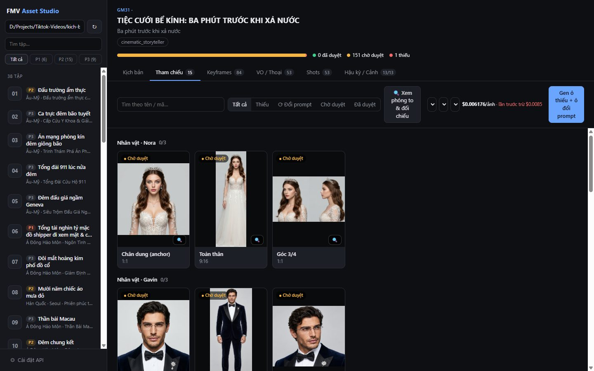
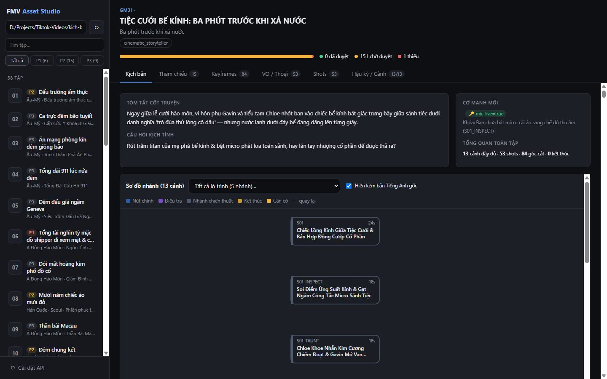
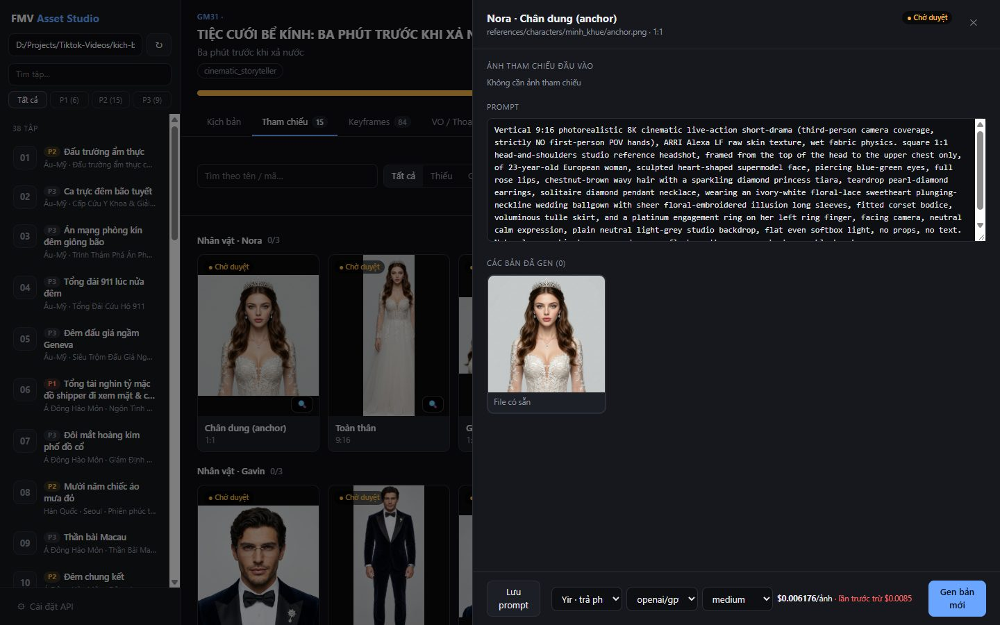
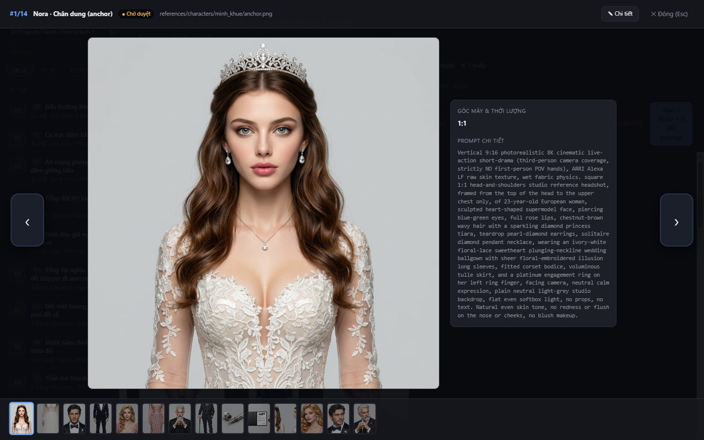
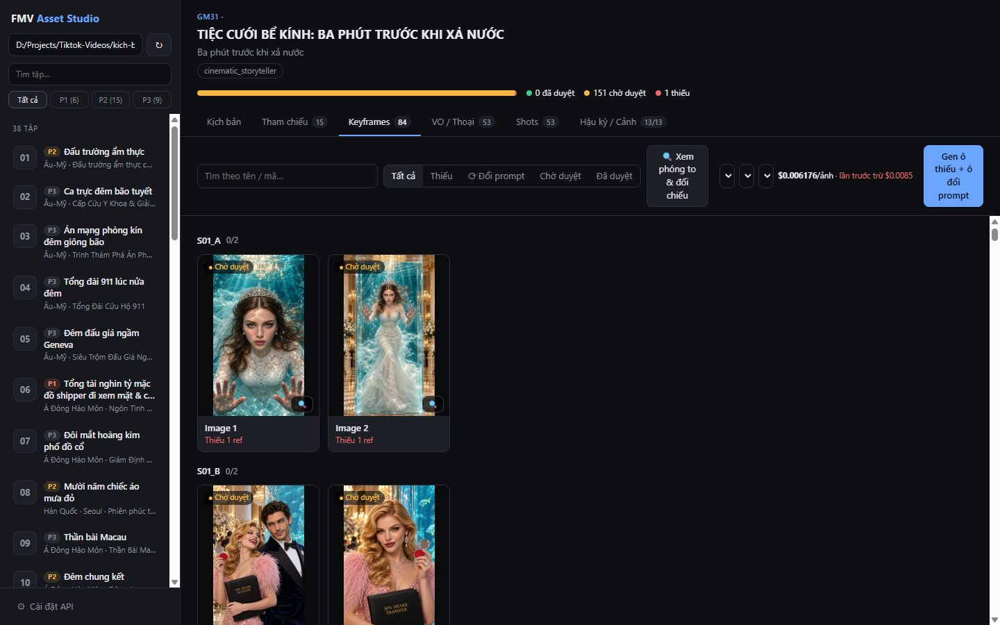
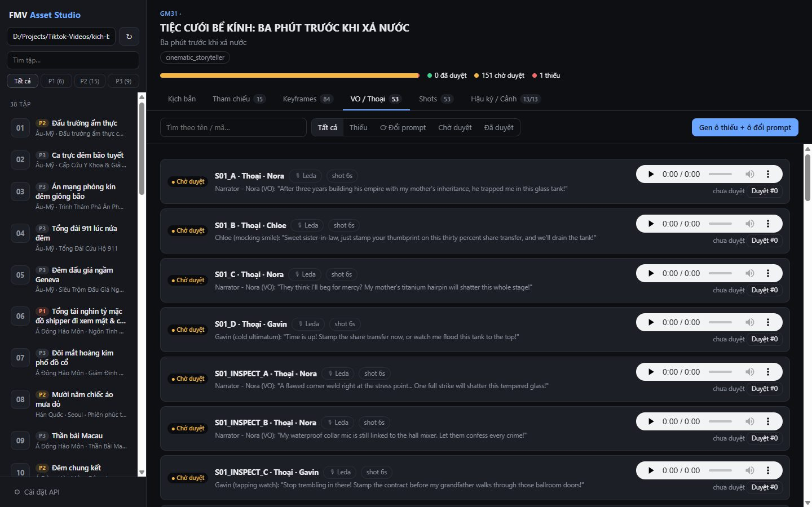
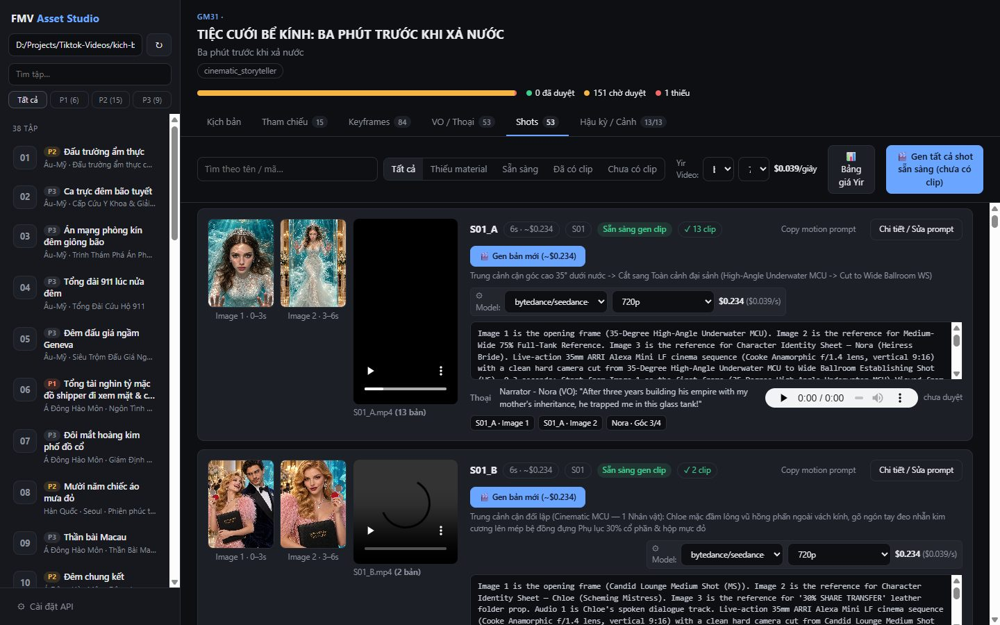
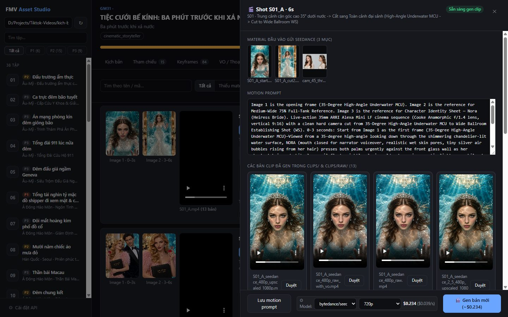
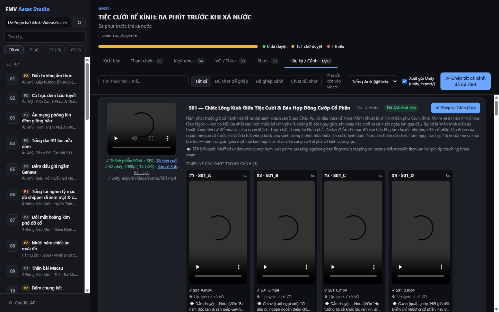

Asset Studio: xem và soát mọi thứ của một tập
Asset Studio gom toàn bộ tài nguyên của một tập vào một chỗ: kịch bản, ảnh tham chiếu, keyframe, giọng đọc, clip và video hậu kỳ. Các tab đi từ trái sang phải đúng thứ tự quy trình. Ảnh minh họa trong trang này chụp từ tập GM31, tập đã làm xong cả quy trình.
gplay. Từ máy khác trong LAN, bạn xem, Duyệt, Gen và Lưu prompt được như trên máy chủ. Nút Gen / Render mất thêm chi phí thật, nên xem giá hiện bên cạnh trước khi bấm. Chỉ riêng Cài đặt API là sửa được trên máy chủ mà thôi.Đọc trạng thái
Mỗi ảnh hoặc file giọng có một nhãn trạng thái. Thanh lọc ở mỗi tab dùng đúng các nhãn này.
Chưa có file. Cần sinh.
Đã có bản nháp, đang chờ người xem.
Bản chính thức, các bước sau sẽ dùng bản này.
Prompt đã đổi sau khi sinh, ảnh cũ không còn khớp. Cần sinh lại.
Màn hình chính & cách chọn tập
Mọi tab dùng chung một khung: bên trái là danh sách tập, phía trên là thông tin tập và các tab xếp theo thứ tự quy trình.

123456789101112- 1Tìm tập theo tên hoặc mã; lọc theo mức ưu tiên P1–P3.
- 2Danh sách tập: bấm vào một tập để mở.
- 3Mã tập (GM31), tên tiếng Việt và chế độ góc máy.
- 4Thanh tiến độ của cả tập: đã duyệt · chờ duyệt · thiếu.
- 5Các tab, đi từ trái sang phải đúng thứ tự làm việc. Số bên cạnh là số mục trong tab.
- 6Tìm nhanh theo tên hoặc mã shot.
- 7Lọc theo trạng thái (xem bảng ở trên).
- 8Xem phóng to lần lượt mọi ảnh, so với prompt.
- 9Nút sinh hàng loạt cho cả tab.
- 10Nhóm theo nhân vật / bối cảnh / đạo cụ;
0/3= số ảnh đã duyệt. - 11Nhãn trạng thái của từng ảnh.
- 12Kính lúp: xem ảnh cỡ lớn.
Tab Kịch bản: đọc truyện và sơ đồ nhánh
Sau bước 04Xem lại cốt truyện, các cờ và toàn bộ sơ đồ nhánh của tập. Tab này chỉ để đọc.

1234567- 1Tóm tắt cốt truyện và câu hỏi kịch tính của tập.
- 2Cờ manh mối: tên cờ và câu gợi ý khi lựa chọn đang bị khóa.
- 3Tổng quan: số cảnh, shot, góc cắt, kết cục.
- 4Chọn một lộ trình để tô sáng đúng đường chơi đó trên sơ đồ.
- 5Bật/tắt bản tiếng Anh gốc bên cạnh tiếng Việt.
- 6Màu của node: nút chính · điều tra · nhánh chiến thuật · kết thúc · cần cờ. Nét đứt = quay lại.
- 7Mỗi ô là một cảnh (node): mã cảnh và thời lượng. Bấm vào để xem các lựa chọn và shot.
Sửa cảnh S01 tập <NN>: …
Ngăn chi tiết một ảnh tham chiếu
Bước 05Bấm vào một ảnh bất kỳ (tab Tham chiếu hoặc Keyframes) để mở ngăn này: xem prompt, các bản đã sinh và bản đang dùng.

12345678- 1Tên ảnh và đường dẫn file trong tập.
- 2Trạng thái hiện tại.
- 3Ảnh tham chiếu đầu vào dùng để sinh ảnh này (ảnh mặt gốc chỉ có prompt).
- 4Prompt đã dùng để sinh ảnh. Muốn đổi thì nhắn Hermes.
- 5Các bản đã sinh. Bấm vào một bản để xem lớn hoặc duyệt.
- 6Lưu prompt đã sửa.
- 7Chọn nhà cung cấp, model, chất lượng; giá mỗi ảnh hiện ngay bên cạnh.
- 8Sinh bản mới. Các bản cũ được giữ lại, không bị ghi đè.
Duyệt tất cả tham chiếu tập <NN>
Sinh lại ảnh mặt Nora tập <NN> vì nốt ruồi sai bên
Xem phóng to & đối chiếu
Bước 05–06Cách nhanh nhất để soát cả bộ ảnh: xem từng ảnh cỡ lớn ngay cạnh prompt của nó.

12345- 1Vị trí (#1/14), tên ảnh, trạng thái, đường dẫn.
- 2Ảnh trước / ảnh sau. Dùng được phím ← →.
- 3Khung hình và prompt chi tiết để so: tóc, trang phục, trang sức, nốt ruồi…
- 4Dải ảnh thu nhỏ: bấm để nhảy tới ảnh bất kỳ.
- 5Mở ngăn chi tiết của ảnh đang xem; Đóng hoặc phím Esc để thoát.
Tab Keyframes: khung hình từng shot
Bước 06Mỗi shot có 1–4 khung (Image 1, Image 2…), ứng với các góc cắt trong shot. Cách đọc giống tab Tham chiếu.

1234- 1Nhóm theo shot:
S01_A,0/2= số khung đã duyệt. - 2Image 1 / Image 2 = khung mở đầu và khung ở mốc cắt trong shot.
- 3Thiếu 1 ref (chữ đỏ): ảnh tham chiếu dùng cho khung này chưa được duyệt. Duyệt tham chiếu trước.
- 4Kính lúp: xem lớn, soát theo checklist 8 điểm.
Tạo keyframe tập <NN> cảnh S01
Sinh lại keyframe S01_B tập <NN> vì thừa một người
Tab VO / Thoại: nghe và duyệt giọng
Bước 07Mỗi dòng là một câu thoại hoặc dẫn chuyện tiếng Anh. Nghe từng câu, kiểm tra cảm xúc và độ dài.

1234567- 1Trạng thái của file giọng.
- 2Shot và người nói.
- 3Giọng được gán (ví dụ Leda) và độ dài shot. Câu nói không được dài hơn shot.
- 4Câu thoại; cảm xúc ghi trong ngoặc, ví dụ (mocking smile).
- 5Nghe thử.
- 6Duyệt bản giọng này.
- 7Sinh hàng loạt các câu còn thiếu hoặc đã đổi lời.
Tạo giọng tập <NN>
Đọc lại câu S01_B tập <NN>, giọng mỉa mai hơn
Tab Shots: tư liệu đầu vào và clip
Bước 08Một hàng là một shot: keyframe, clip đã render, prompt chuyển động, thoại và giá. Đây là tab duy nhất có nút mất thêm chi phí.

1234567891011- 1Lọc: thiếu material · sẵn sàng · đã có clip · chưa có clip.
- 2Bảng giá trực tiếp từ Yir.
- 3Render mọi shot sẵn sàng: mất thêm chi phí.
- 4Keyframe đầu vào kèm mốc thời gian (0–3s, 3–6s).
- 5Clip hiện tại và số bản đã render (13 bản).
- 6Trạng thái: sẵn sàng render / số clip đã có.
- 7Chép prompt chuyển động.
- 8Mở chi tiết shot (ảnh dưới).
- 9Model, độ phân giải và giá của shot.
- 10Câu thoại và nghe thử (dùng làm mẫu khẩu hình).
- 11Material gửi cho model video: các khung và ảnh tham chiếu.
Báo giá video tập <NN>
Render video tập <NN> cảnh S01
Chi tiết shot: so sánh các bản clip
Bước 08Mọi bản render đều được giữ lại. Ở đây so các bản để chọn bản tốt nhất, thay vì render lại.

1234567- 1Mã shot, thời lượng, mô tả cú cắt.
- 2Trạng thái shot.
- 3Material đầu vào gửi Seedance (3 mục).
- 4Prompt chuyển động đầy đủ.
- 5Các bản clip đã render (trong
clips/vàclips/raw/). Bấm để xem. - 6Chọn bản tốt nhất làm bản chính.
- 7Render bản mới: mất thêm chi phí (~$0.234 cho 6 giây ở 720p).
Chọn bản clip tốt nhất cho S01_A tập <NN> và báo lý do
Tab Hậu kỳ / Cảnh: ghép thành phẩm
Bước 09–10Ghép các shot thành video từng cảnh, gắn phụ đề, nhạc nền và xuất gói Unity. Bước này không mất thêm chi phí.

123456789- 1Lọc: đủ shot để ghép · đã ghép · chưa đủ shot.
- 2Ngôn ngữ phụ đề gắn cứng vào video.
- 3Xuất luôn vào
unity_export/. - 4Ghép tất cả các cảnh đã đủ shot.
- 5Video cảnh đã ghép. Bấm để xem.
- 6Tình trạng thành phẩm: có BGM + SFX, 1080p, độ to (LUFS), phụ đề, đã vào
unity_export. - 7Cảnh đã đủ clip cho mọi shot (4/4).
- 8Ghép lại cảnh này.
- 9Dòng thời gian các shot trong cảnh, kèm trạng thái khớp khẩu hình và câu thoại.
Hậu kỳ tập <NN>
Đóng gói Unity tập <NN>